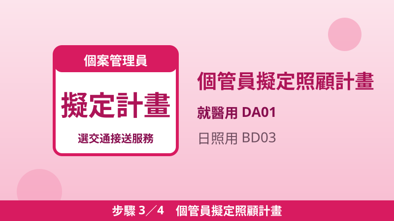
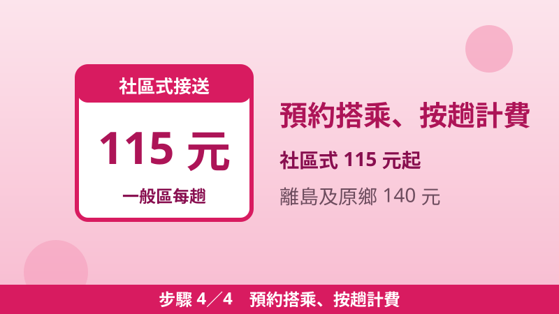

長照交通接送補助怎麼用？每月最高 2,400 元、就醫復健與日照接送 4 步驟
家裡長輩每週要去醫院回診、復健、洗腎，或固定去日照中心，叫車的錢一個月下來不少。其實長照服務裡就有「交通接送」這一包錢：符合長照需要等級第 2 級以上，政府每月給 1,680 到 2,400 元交通額度，幫長輩往返醫院就醫、定期復健或透析治療；去日照中心、巷弄長照站的社區式接送，每趟只要 115 元起。申請不用另外跑流程，跟著長照申請的四步驟一起辦，照管專員到府評估、個管員寫進照顧計畫就能用。
兩種交通接送，先分清楚
長照的交通接送有兩種，額度來源和用途完全不同，搞混會用錯額度，先看對照表：
| 項目 | 交通接送（DA01） | 社區式交通接送（BD03） |
|---|---|---|
| 用途 | 往返居家至醫療院所就醫、定期式復健或透析治療 | 接送往返日間照顧中心、小規模多機能、托顧家庭、巷弄長照站、文化健康站、失智社區服務據點、輔具中心或身心障礙日間照顧服務 |
| 額度來源 | 交通接送額度（每月） | 照顧及專業服務額度（每月 10,020–36,180 元，依長照需要等級） |
| 給付價格 | 每趟給付價格由地方主管機關訂定公告 | 一般區 115 元；離島及原住民地區 140 元 |
| 距離限制 | 無 10 公里限制 | 住家與機構距離 10 公里以內，超過 10 公里所需費用由長照給付對象自行負擔 |
簡單記：去醫院、復健、洗腎，用交通接送（DA01）；去日照中心、巷弄長照站、托顧家庭，用社區式交通接送（BD03），從照顧及專業服務額度扣。
每月交通額度：依居住地分四區
交通接送的每月額度不看失能等級，第 2 級到第 8 級都一樣，只看住在哪一區：轄區面積越小、交通越方便的縣市額度越低，偏遠縣市和偏遠鄉鎮額度最高。
| 分區 | 每月交通額度 | 縣市 |
|---|---|---|
| 第一區 | 1,680 元 | 嘉義市、新竹市、基隆市、臺北市 |
| 第二區 | 1,840 元 | 彰化縣、桃園市、雲林縣、新竹縣、苗栗縣、嘉義縣、新北市、宜蘭縣、臺南市、臺中市 |
| 第三區 | 2,000 元 | 屏東縣、高雄市、南投縣 |
| 第四區 | 2,400 元 | 臺東縣、花蓮縣、澎湖縣、金門縣、連江縣，以及新北市烏來區、石碇區等 48 個偏遠鄉鎮市區 |
注意：第四區除了臺東、花蓮、澎湖、金門、連江五個偏遠縣市，還包括新北市烏來、石碇、坪林、平溪、雙溪、貢寮等 48 個偏遠鄉鎮市區，住在這些地方一樣拿 2,400 元。
自付多少？看身分別
額度是補助上限，不是現金：服務費用先從額度扣，額度內的費用再依身分別自付一部分。第一類（列冊低收入戶、中低收入戶等）政府全額補助；第二類自付 5–10%；第三類（一般戶）自付 16–30%。超過額度的部分要自己負擔。各項額度不能互相流用，交通接送額度用完，不能拿照顧服務的額度來補。實際自付金額以照管中心核定為準。
圖文四步驟：從打電話到開始搭車
步驟 1打 1966 申請長照服務
市話、手機直撥 1966，前 5 分鐘免費；也可以直接找居住地縣市的長期照顧管理中心申請。人不在長輩身邊也可以代為申請。
步驟 2照管專員到府評估
照管中心派照管專員到家評估，確認長照需要等級（第 2 級以上才符合給付資格）與交通接送額度（依居住地分區）。

步驟 3個管員擬定照顧計畫
與個案管理員討論需要哪些服務，把交通接送寫進照顧計畫：就醫、復健、洗腎用 DA01，去日照中心、巷弄長照站用 BD03，並連結長照特約單位。

步驟 4預約搭乘、按趟計費
照顧計畫核定後向特約單位預約搭乘。社區式接送每趟一般區 115 元、離島及原住民地區 140 元，住家到機構 10 公里以內；就醫、復健、透析的每趟給付價格由地方主管機關訂定公告。
常見問題
家裡有請外籍看護工，還能申請交通接送嗎？
可以。衛福部明載：聘僱外籍看護工的家庭可以申請交通接送、輔具與無障礙環境評估；照顧及專業服務額度為原本的 30%，外籍看護工請假休息時也可以申請喘息服務。
評估不到第 2 級，就完全沒補助嗎？
長照給付要第 2 級以上才符合資格。評估未達資格也別白跑：各地設有社區照顧關懷據點、巷弄長照站、文化健康站等社區服務據點，提供健康促進、共餐、預防及延緩失能服務，長輩可以就近參加。
社區式接送超過 10 公里怎麼辦？
超過 10 公里那段的費用由長照給付對象自行負擔。距離是算住家到社區式服務類長照機構的距離，出發前先跟個管員或特約單位確認。
就醫、復健的交通接送每趟多少錢？
每趟給付價格由地方主管機關訂定公告，各縣市不一樣，實際金額洽當地照管中心或特約單位確認。社區式接送則是全國統一價：一般區 115 元、離島及原住民地區 140 元。
📖 延伸閱讀：長照 2.0 申請教學：打 1966 專線、四步驟、在家就能評估 ／ 長照四包錢金額表（2026）：照顧、交通、輔具、喘息額度與自付比率一次看懂 ／ 長照喘息服務怎麼用？每年最高 48,510 元，讓主要照顧者好好休息 ／ 長照輔具補助申請教學：3 年 4 萬起、第二組 6 萬怎麼選，租比買划算的 5 種情況 ／ 2026 長照住宿補助升級：每月最高 1.5 萬、115 年度最高 18 萬，第二階段申請只到 12/16
📎 資料來源
- 衛生福利部長照專區「交通接送服務」（社區式 BD03：10 公里內、115／140 元；DA01：四區 1,680–2,400 元、就醫復健透析、每趟價格由地方主管機關訂定）：1966.gov.tw
- 衛生福利部長照專區「申請長照服務」（資格、四步驟、四包錢額度表、自付比率、外看家庭、評估未達資格的社區據點）：1966.gov.tw
- 立法院公報《長期照顧服務申請及給付辦法》部分條文修正條文（114 年 6 月 19 日修正發布：附表二額度、附表三分區表、額度不得流用、交通限就醫復健透析）：lis.ly.gov.tw
最後查證日期：2026-11-14
免責聲明：本文僅供參考，補助資格與金額以政府官方最新公告為準，申請前請至官方網站或洽受理機關確認。